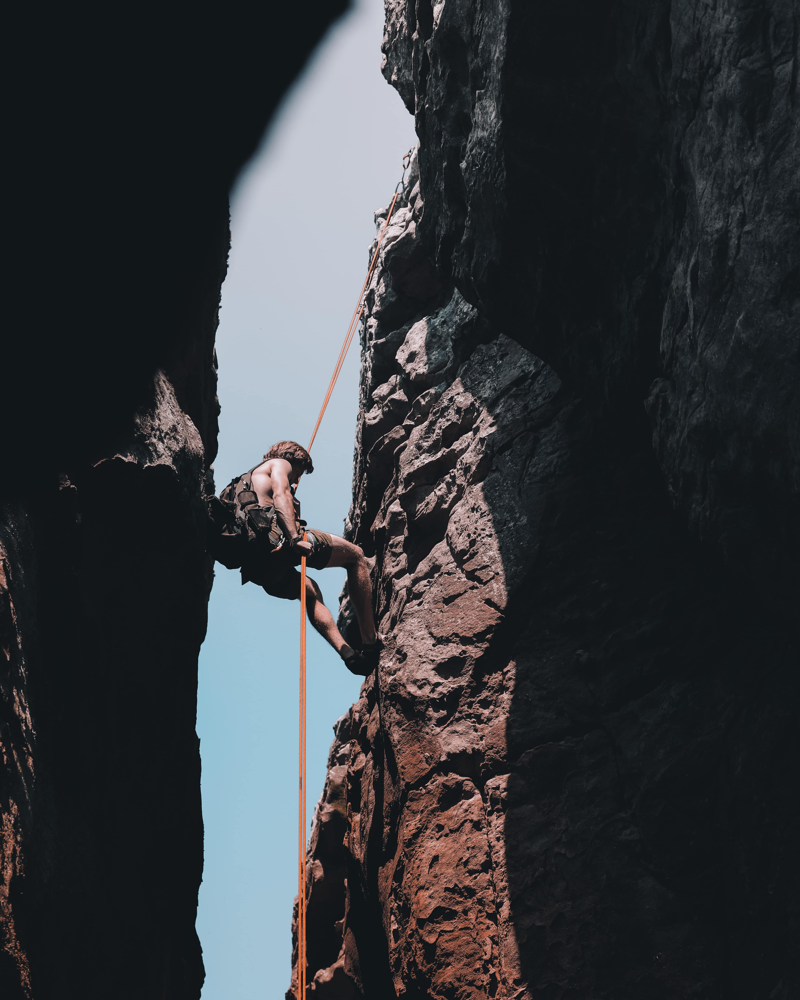
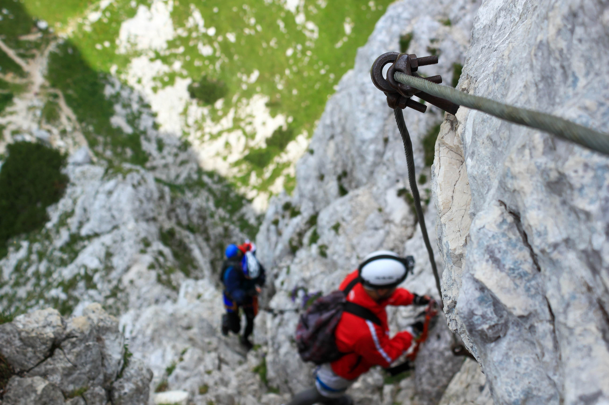

A few isolated cases of mountaineering occurred in the 1300s and 1400s for purposes such as religion and meteorology, the most notable being the first ascent of Mont Aiguille in 1492. Charles VIII of France ordered his chamberlain and military engineer Antoine de Ville to scale the “inaccessible mountain” we now call Mont Aiguille.
The team armed themselves with ladders and ropes and reached the top. They had hoped to find divinities but instead found only a meadow filled with flowers. The group stayed on the summit for six days, held Mass in a makeshift hut, and erected three crosses as proof of their accomplishment. Mont Aiguille wasn't summitted again until 1834. This is in part because in the 1700s people started to see the allure of scaling mountains for the thrill of the accomplishment, and from this, the sport of mountaineering was born.
In the mid-18th century, Europeans started to take an interest in the mountains, beginning with spectacular glaciers of the Chamonix Valley in France The impetus for this mountaineering craze is generally attributed to the 1760 visit to Chamonix by Horace Bénédict de Saussure, a young scientist from Geneva.
De Saussure was so captivated by the sight of the towering Mont Blanc (15,771 ft/4,807 m), the tallest peak in Europe, that he offered a monetary reward to the first person who would successfully climb it. In 1786, his vision finally came true: Mont Blanc was summited by a local doctor, Michel-Gabriel Paccard, and his porter, Jacques Balmat. De Saussure himself reached the top the very next year, and Chamonix local Marie Paradis completed the first female ascent in 1808.
The Mont Blanc ascents were soon followed by the first ascent of the Aiguille du Midi in 1818, and the foundation of the Chamonix guides company in 1823. Over the next few decades, interest in the Alps continued to increase among the Swiss, the French and the Germans. However, the real mountaineering frenzy had its source in Victorian England.
The period between Alfred Wills' 1854 ascent of the Wetterhorn and Reverand Charles Edward Whymper's 1865 summit of the Matterhorn (in which five people died) is considered the golden age of mountaineering.
During this time, mountaineers flocked to the Alps and carried out first ascents of virtually all the major peaks. The expeditions were predominantly led by British climbers and accompanied by Swiss or French guides. Several key figures of the golden age of mountaineering include John Tyndall, Irish physicist and passionate mountaineer, and Leslie Stephen, author and prominent alpinist. It was during this decade that the Alpine Club of Great Britain was founded (1857). Furthermore, during this time, mountaineering became a fashionable sport with official guides and increasingly technical equipment.
The 1870's saw a rise in female mountaineers. Pioneers such as Britain's Lucy Walker, who completed the first female ascent of the Matterhorn in 1871, and the American Meta Brevoort, who completed the first winter ascent of the Jungfrau in 1874, forged new possibilities and inspired countless other women to follow in their footsteps.
By the end of the 19th century, the Alps had been all but scoured and mountaineers began to seek more challenging routes up the already-climbed mountains. In 1908, Oscar Eckenstein invented the 10-point crampon, facilitating ice climbing by reducing the need for mountaineers to cut steps into glaciers.
During this time, ice climbing was gaining in popularity in its own right, and the first-ever ice climbing competition took place in 1912 on the Brenva Glacier in Courmayeur, Italy. Eckenstein was also responsible for popularizing ice axes that could be wielded with one hand.
Meanwhile, perhaps inspired by the rudimentary bolts and fixed hand lines used by George Anderson to climb Yosemite's Half Dome in 1875, bolts began to be regularly used by climbers in the 1920s, functioning as a safety measure and occasionally as a direct aid.
Mountaineers were also turning their sights outside of Europe. German explorer Alexander von Humboldt had set a mountain-climbing record after almost summiting the Andean mountain of Chimborazo (20,702 ft/6,310 m) in 1802. Humboldt was famous for first attributing mountain sickness to the lack of oxygen at high altitudes.
By the end of the 19th century, Edward Whymper had finally summited Chimborazo in 1880 and again in 1897, and Matthias Zurbriggen had successfully scaled Aconcagua (22,831 ft/6,959 m) in the Andes, one of the world's Seven Summits and the highest peak in the Western Hemisphere.
In the North American Rocky Mountains, Pikes Peak was summited in 1820, as well as a few other isolated peaks. But it was the completion of the Canadian Pacific Railway in 1885 that facilitated access to North America's Selkirk and Rocky Mountains. As a result, American, British and European mountaineers accompanied by skilled Swiss guides came in droves and rapidly tackled the renowned peaks, summiting Mount Sir Donald in 1890, Mount Temple in 1894, Mount St. Elias and Mount Lefroy in 1897, Grand Teton in 1898 ,and Mount Assiniboine in 1901. It wasn't until 1913 that Mount Robson (highest peak in the Rockies at 3954m) and Denali/Mount McKinley (highest peak in North America at (20,310 ft/6,190 m) were successfully climbed.
As its popularity increased, the sport of mountaineering gradually became less elitist. In 1907, Britain founded the Ladies' Alpine Club in response to the refusal of the Alpine Club of Great Britain to allow women. The two clubs were merged much later, in 1975.
Meanwhile, other mountaineers tackled mountains in Africa. Mount Kilimanjaro (19,340 ft/5,895 m), the tallest mountain in Africa and the highest free-standing mountain in the world, was summited in 1889, and Mount Kenya (17,058 ft/5,199 m) was conquered in 1899, along with Margherita Peak (20,310 ft/6,190 m) in 1906. The British also tackled the Caucasus mountain range, summiting Mount Kazbek in 1868, and a team of New Zealand locals successfully scaled Aoraki/Mount Cook in 1894.
After World War I, mountaineering grew in popularity among amateurs, who scaled mountains dressed in regular attire with little knowledge or preparedness for the risks they would encounter. In addition to Europeans, mountaineering was also gaining popularity with Chinese, Indian, Japanese, Russian and New Zealand sports enthusiasts.
The next big challenge was the Himalayas, and Mount Everest in particular. In 1922, George Finch and Geoffrey Bruce made headlines by reaching the unprecedented height of 27,250 ft/8175 m on an Everest expedition. They owed the success of the altitude record to their pioneering use of bottled oxygen.

Over the next few decades, scientists would refine this technique. By the time Everest was successfully scaled, the technology was lighter, more efficient and much less faulty.
World War II put a temporary stop to the list of accolades, but momentum in the mountaineering world soon resumed with the first ascent of Annapurna I by a French mountaineer in 1950 (26,545 ft/8,091 m). This was followed in 1954 by the triumphant ascent of K2 (28,250 ft/8,611 m) by a mostly Italian team. K2 is legendary for the multitude of failed summit attempts and lives that have been lost in the process. Thanks in large part to the unpredictable weather conditions, the formidable peak is still considered one of the most challenging in the world.
Finally, on May 29th, 1953, Sherpa Tenzing Norgay and New Zealander Edmund Hillary completed the first ascent of Mount Everest (29,035 ft/8,850 m), the tallest mountain in the world. The next year saw first ascents of K2 and Cho Oyu (26,906 ft/8,201 m), and in 1956 a Swiss team scaled Lhotse I (27,940 ft/8,516 m).
By 1964, all 8,000 m mountains in the Himalayas had been summited, and in 1975, Japanese mountaineer Junko Tabei became the first woman ever to summit Mount Everest. She would go on to become the first woman to scale all Seven Summits in 1992, just seven years after Richard Bass.
The 1960s and 1970s were formative years for mountaineering culture outside of Europe, with countries such as Canada establishing their own style of mountaineering. This was also a time of rapid technological advancement, and mountaineers could use artificial aids and more sophisticated techniques.

In contrast to heavy-handed “expedition-style trekking,” many mountaineers turned back to the minimalist “alpine” style of scaling peaks with hardly any equipment, eschewing the use of oxygen, porters and other forms of help. By the 1980's, mountaineering had become very accessible and there was a huge rise in the number of recreational climbers.
In general, mountaineering is a group sport in which members of a team use their combined abilities and resourcefulness to help each other attain their goals. Following the establishment of the Alpine Club of Great Britain in 1857, other European countries quickly followed the example. Today, there are numerous mountaineering clubs around the world. They sponsor expeditions, publish journals, and offer support to mountaineers in their country.
Today, mountaineering continues to become more accessible. Some people compare Mt. Everest to a highway because of the incredible number of people who attempt to summit it every year.
Modern climbing techniques and innovations in mountaineering technology, such as improved ropes, bolts, crampons, and ice picks, make it possible to tackle ever more challenging terrain, such as steep cliff faces, frozen waterfalls, and moraines.
Many of the world's most famous summits are equipped with mountain huts and base camps mountaineers can stay in while ascending the mountain and preparing for a summit attempt. Search and rescue techniques have also vastly improved. Via ferratas, steel cables that are used as aids in trekking steep terrain, have become popular on routes frequented by alpine tourists.
To keep up the thrill of the conquest, serious mountaineers strive to complete winter ascents, ascents of all the tallest mountains, solo ascents, alpine-style ascents, and ascents followed by descents on skis. Mountaineers continue to explore not only the great mountain ranges but also smaller mountains. such as in the Scottish Highlands or the mountains in Scandinavia. In terms of clothing, the move away from cotton to more breathable materials has vastly improved comfort and made it easier for mountaineers to spend nights outside in all climates.
There is some controversy over the commercialization of the world's mountain ranges, with many mountaineers arguing that amateur mountaineers endanger themselves and others, including their guides, as well as leave a trail of rubbish on the mountain. However, many mountain communities have developed flourishing tourism industries based on aiding would-be summiteers, so it's clear this issue is a complicated one.
Also, mountaineering stories do not always have a happy ending. There are countless examples of courageous mountaineers who have perished along the way. Among the most notable was experienced British mountaineer George Mallory and his companion Andrew Irvine, who died in an Everest summit attempt in 1924. Mallory's body was not found until many decades later (1999), and the circumstances of the pair's death are one of the greatest mysteries in the history of mountaineering.
Mountaineering is the ultimate test of strength and stamina, and it provides its disciples with the chance to see some of the world's most breathtaking natural spots. When asked why he wanted so badly to undertake the perilous climb up Mt. Everest, Mallory had a pithy response ready: “Because it's there.” These words may best sum up the world's fascination with mountaineering.
Subscribe to our Newsletter for the Latest Updates.